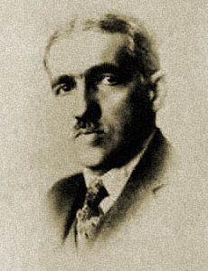
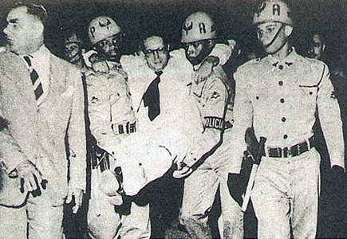

Edição Especial OAB
O período da abertura
Em nome do restabelecimento democrático, um grupo de advogados cariocas, mineiros e paulistas (cujos principais representantes na Comissão organizadora eram Adauto Lúcio Cardoso, Augusto Pinto Lima, Bruno Almeida Magalhães, Dario Almeida Magalhães, Francisco Serrano Neves, Sobral Pinto, Jorge Dyott Fontenelle, Justo Mendes de Morais, Odilon Braga e Targino Ribeiro), promoveu uma homenagem ao candidato da oposição à Presidência da República, brigadeiro Eduardo Gomes. O grupo elaborou um manifesto subscrito por mais de 1500 advogados, entregue ao brigadeiro em cerimônia realizada no Teatro Municipal no Rio de Janeiro, em outubro de 1945. O manifesto contou com o apoio informal da Ordem, que não podia assumir posições partidárias.
Em abril de 1946, o Conselho aprovou voto de regozijo pela instalação do Poder Legislativo.
Ainda se readaptando às estruturas democráticas, o governo brasileiro, em abril de 1946, designou o presidente da OAB, Raul Fernandes, para integrar a delegação brasileira à Conferência de Paz em Paris. Esta decisão obteve o apoio do Conselho Federal.
Em maio de 1954, já na nova sede do prédio da Casa dos Advogados - situada na Av. Marechal Câmara, 210, Centro, Rio de Janeiro -, o Conselho Federal da OAB aprovou moção de protesto, dirigida ao ministro da Justiça, contra os novos atentados à dignidade da pessoa humana, cometidos por autoridades policiais em vários pontos do País.
Em sessão de 10 de agosto de 1954, o Conselheiro Federal Mayr Cerqueira protestou contra a quebra da ordem jurídica em virtude dos acontecimentos políticos que culminaram com o atentado da Rua Toneleros, contra o jornalista Carlos Lacerda, atribuído ao segurança de Getúlio Vargas, Gregório Fortunato, onde veio a falecer o major da Aeronáutica Rubens Vaz.

PRESIDENTE AUGUSTO PINTO LIMA
PRESIDENTE AUGUSTO PINTO LIMA
No dia 11 de agosto de 1948, o Conselheiro Augusto Pinto Lima foi eleito presidente do Conselho Federal. Morreu vinte dias depois, em plena sessão, vítima de uma síncope, quando se pronunciava sobre a discussão relativa à manutenção de seu mandato como presidente do Conselho da Seção do Distrito Federal.

Carlos Lacerda é carregado ferido com um tiro de raspão no pé direito no crime da Rua Toneleros.
Carlos Lacerda é carregado ferido com um tiro de raspão no pé direito no crime da Rua Toneleros.
No dia 31 de agosto, ainda sob o impacto do suicídio de Vargas, ocorrido a 24 do mesmo mês, o Conselho Federal da OAB aprovou voto de pesar pelo falecimento do presidente da República.
O senador Assis Chateaubriand, em artigo sobre importação de automóveis, fez acusações à classe dos advogados e à magistratura, o que provocou grande repercussão. Em sessão de 8 de maio de 1956, o Conselho Federal tomou conhecimento da retratação do senador em relação às denúncias feitas a alguns de seus membros. O procurador geral da Justiça do Distrito Federal, Victor Nunes Leal, não satisfeito, oficiou ao senador solicitando que apontasse os envolvidos nas acusações, para que fossem abertos os processos competentes.
A Autonomia ameaçada

PRESIDENTE HAROLDO VALLADÃO (1950-1952)
Na década de 1950, a Ordem dos Advogados do Brasil se viu às voltas com a ameaça de perda de sua autonomia institucional. Na introdução do livro As Razões da Autonomia da OAB, editado pelo Conselho Federal em 1975, José Ribeiro de Castro Filho, então presidente da entidade, afirma que a Ordem dos Advogados do Brasil integra a própria estrutura do estado de direito, com atribuições que só podem ser exercidas, precisamente, sob a condição de não-sujeição e não-vinculação a qualquer dos Poderes. "Até porque da lição da lição da História", ele acrescenta, "deflui. necessariamente que, em todas as épocas de colapso do Direito, a Ordem esteve sempre em crise perante o Poder". A independência e a autonomia da Ordem dos Advogados do Brasil são pressupostos fundamentais para a consecução da finalidade expressa em seu Estatuto, qual seja: defesa da Constituição, do estado democrático de direito, dos direitos humanos, da justiça social, da boa aplicação das leis e da rápida administração da Justiça, além do aperfeiçoamento da cultura e instituições jurídicas.
Não obstante, ao longo da história da entidade, foram muitas as tentativas de cerceamento de seu poder de atuação: entre 1940 e 1950, com a obrigatoriedade de prestar contas ao Tribunal de Contas da União; na década de 1970, com a tentativa de submissão da entidade ao Ministério do Trabalho; em 1998, com duas medidas provisórias que tratavam da vinculação do Conselho Federal e das Seccionais ao Poder Judiciário dos Estados; e no ano 2000, processo ainda em andamento, quando o Ministério Público enquadrou a Ordem novamente como uma autarquia obrigada a prestar contas ao TCU.

PRESIDENTE JOSÉ RIBEIRO DE CASTRO FILHO
Comunicação Social - Jornalismo
Legislação e Ética no Jornalismo: Denis Policani
Alunas: Ayla Ueda, Bruna Presmic, Fernanda Ferraz, Karina Martin e Mariana Thomaz